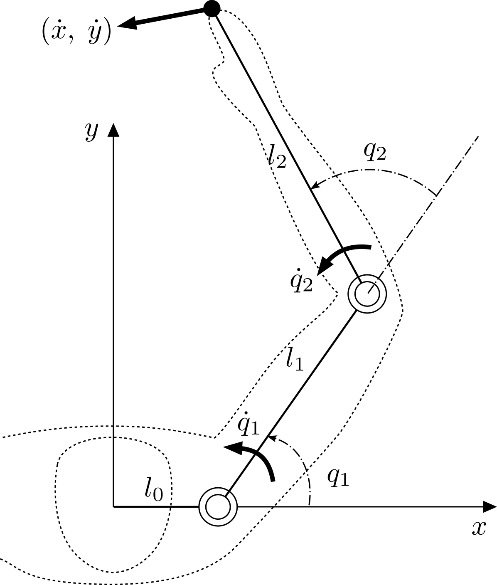

Differential Kinematics
The Kinematics chapter fixed the arm's configuration at a single instant. Motion, however, is the variation of that configuration as time passes. Differential kinematics studies the relationship between the rates of change of the joint angles and the resulting endpoint velocity (and, one derivative further, the endpoint acceleration).
This page builds the relationship up from a concrete two-joint arm and then
generalizes it to an arbitrary number of joints, mirroring how the skelarm
kinematics code is organized.
1. A two-joint arm
Recall the two-joint arm from the Kinematics chapter — a fixed base link \(l_0\) followed by two movable links of length \(l_1\) and \(l_2\). The figure below revisits it, now with the joint velocities \(\dot{q}_1, \dot{q}_2\) and the resulting endpoint velocity drawn in.

Endpoint velocity of a two-joint arm. The base link \(l_0\) offsets the first joint along the \(x\)-axis; \(q_1, q_2\) are the joint angles and \(\dot{q}_1, \dot{q}_2\) their velocities.
Its endpoint position is
Differentiating with respect to time relates the joint velocities to the endpoint velocity at the current configuration:
Notice that the constant base length \(l_0\) drops out of the velocity: it shifts where the arm is but never how fast the endpoint moves.
2. Generalizing to \(n\) joints
Introduce the absolute link angle \(\theta_i\) — the orientation of link \(i\) measured from the \(x\)-axis — so that \(\theta_i = \theta_{i-1} + q_i\). With this notation the pattern above extends to an arm of \(n\) movable links by a recursion that sweeps forward from the base (link \(0\)) to the endpoint (link \(n\)).
Symbols used throughout:
- \(q_i\) — joint angle of joint \(i\), relative to the previous link.
- \(\theta_i\) — absolute angle of link \(i\).
- \((x_i, y_i)\) — position of the tip of link \(i\) (equivalently, the origin of joint \(i+1\)).
- \(l_i\) — length of link \(i\), with \(l_0\) the fixed base link.
Velocity
The base link is rigid, so the base of the chain starts from rest:
(The base length still enters the positions through \(x_0 = l_0\), \(y_0 = 0\), but not the velocities.) For \(i = 1, \dots, n\):
Running the recursion to \(i = n\) yields the endpoint velocity.
Acceleration
Differentiating once more gives the matching acceleration recursion, again with \(\ddot{\theta}_0 = \ddot{x}_0 = \ddot{y}_0 = 0\) and, for \(i = 1, \dots, n\):
These two recursions are exactly what compute_forward_kinematics evaluates as
it walks the link list; the fixed base link (stored as links[0]) simply
contributes its \(l_0\) offset with zero velocity and acceleration.
3. The Jacobian
The endpoint velocity is linear in the joint velocities, so it can be packed into a matrix–vector product. Writing the endpoint as \((x, y) \equiv (x_n, y_n)\),
The columns \(j_{xi}, j_{yi}\) are the Jacobian basis for joint \(i\). They can be assembled by a backward recursion (from the tip down to joint \(1\), with a virtual zero column at \(n+1\)):
Equivalently — and this is the compact form skelarm uses — each column is the
lever arm from joint \(i\) to the endpoint, rotated by a quarter turn:
where \((x_{i-1}, y_{i-1})\) is the origin of joint \(i\). The two expressions agree, and both equal the partial derivatives of the endpoint position,
which is precisely why \(J = \partial (x, y) / \partial (q_1, \dots, q_n)\).
4. Centripetal and Coriolis basis
Differentiating the Jacobian relation extends the idea to acceleration:
where \(h_{xi}, h_{yi}\) are the time derivatives of the Jacobian columns, \(h_{xi} = \dot{j}_{xi}\) and \(h_{yi} = \dot{j}_{yi}\). The products \(h_{\ast i}\dot{q}_i\) are the centripetal and Coriolis accelerations, so \(h_{\ast i}\) is called the centripetal/Coriolis basis. Geometrically it is the velocity counterpart of the Jacobian column,
with \((\dot{x}_{i-1}, \dot{y}_{i-1})\) the velocity of joint \(i\)'s origin.
5. Implementation
The differential-kinematics helpers in skelarm.kinematics make these two
viewpoints — the forward recursion and the Jacobian/basis form — independently
computable, which is exactly what lets one validate the other.
| Function | Returns | Theory |
|---|---|---|
compute_forward_kinematics |
(updates link state) | Section 2; forward velocity/acceleration recursion |
compute_jacobian |
\(2 \times n\) matrix \(J\) | Section 3 |
compute_coriolis_basis |
\(2 \times n\) matrix \(H\) | Section 4 |
compute_endpoint_velocity |
\(J \dot{q}\) | Section 3 |
compute_endpoint_acceleration |
\(J \ddot{q} + H \dot{q}\) | Section 4 |
The Jacobian helpers read the joint and endpoint state populated by
compute_forward_kinematics, so call it first. Because the endpoint velocity and
acceleration are then available from two routes — propagated directly by the
forward recursion (stored on the tip link as vx, vy, ax, ay) and reconstructed
from the Jacobian and basis — comparing them is a built-in consistency check:
import numpy as np
from skelarm import (
Skeleton, LinkProp,
compute_forward_kinematics,
compute_endpoint_velocity, compute_endpoint_acceleration,
)
skeleton = Skeleton(
[LinkProp(length=1.0, m=1.0, i=0.1, rgx=0.5, rgy=0.0, qmin=-np.pi, qmax=np.pi),
LinkProp(length=0.8, m=1.0, i=0.1, rgx=0.4, rgy=0.0, qmin=-np.pi, qmax=np.pi)],
base_length=0.3,
)
skeleton.q = np.array([0.4, -0.7])
skeleton.dq = np.array([0.8, 0.3])
skeleton.ddq = np.array([0.6, -0.4])
compute_forward_kinematics(skeleton)
tip = skeleton.links[-1]
assert np.allclose(compute_endpoint_velocity(skeleton), [tip.vx, tip.vy])
assert np.allclose(compute_endpoint_acceleration(skeleton), [tip.ax, tip.ay])
The base link is set up in the Kinematics chapter; here it contributes only a constant offset, since a fixed link has no velocity.